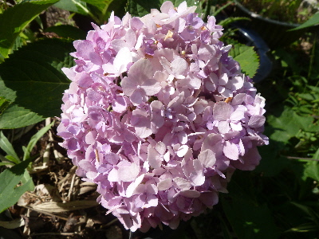
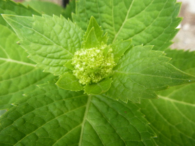
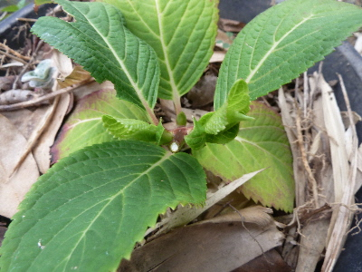
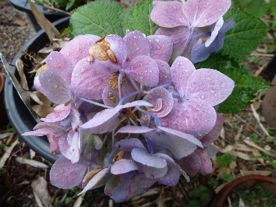
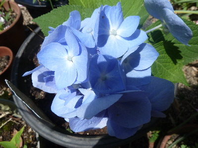

遊びで植物を育てよう
【後の記事】
2017/08/26
アジサイに２回目の花が咲きました。

綺麗に咲きましたが、最初に咲いた花と全然違う。
土の成分のせいかな？
ピンクってことは土がアルカリ性なんだろうな。
でも色も、大きさも、枚数も違う。 違う種類みたいだ。

1回目に咲いた花の挿し木です。
枯れていないので、このまま成長するかな。
【ページTOP】 【アジサイTOP】
【園芸TOP】
2017/07/23
アジサイに新しい花かな？
アジサイに小さい葉の集合体が出来ていました。

これは花かな？
花だったとしたら、あとどれくらいで色がつくいんだろう。
楽しみだな。
【ページTOP】 【アジサイTOP】
【園芸TOP】
2017/06/25
アジサイの花を摘み取りました。
花が傷んできたので切りました。

すっきりしました。
小さい新芽が出てるので、これがドンドン成長するといいです。
切り取った花は挿し木しました。
花の部分だけで長さが短いので、成功するかは不明です。
【ページTOP】 【アジサイTOP】
【園芸TOP】
2017/06/10
紫陽花の花が終わって紫になりました。
最初は綺麗な青でしたが、1月経って紫になりました。

1月くらい花が楽しめましたね。
もう切った方がいいのかな？
【ページTOP】 【アジサイTOP】
【園芸TOP】
2017/05/14
霧島の恵を買いました。
母の日で店頭にアジサイが沢山あり、見てると欲しくなりました。

見た感じ普通のアジサイです。
でもこのアジサイは霧島の恵っていう種類で四季咲きだそうです。
季節感がないのはどうかと思いますが、
薔薇の四季咲きに私は抵抗がないので、アジサイの四季咲きもいいかなと思いました。
ポット苗で税別298円とお手頃価格だったので、購入して大きめの鉢に植え替えました。
小さいですが、今年1年で何回花が咲くでしょうね。
【ページTOP】 【アジサイTOP】
【園芸TOP】
アジサイって色以外にも形も変わるんですね。
【おいしいものを食べよう。】【たくさん寝よう。】
【ソロ活をしよう!】【季節感のあることをしよう。】【動画視聴はほどほどに。】【当サイトの全てのコンテンツは無断転載禁止です。】